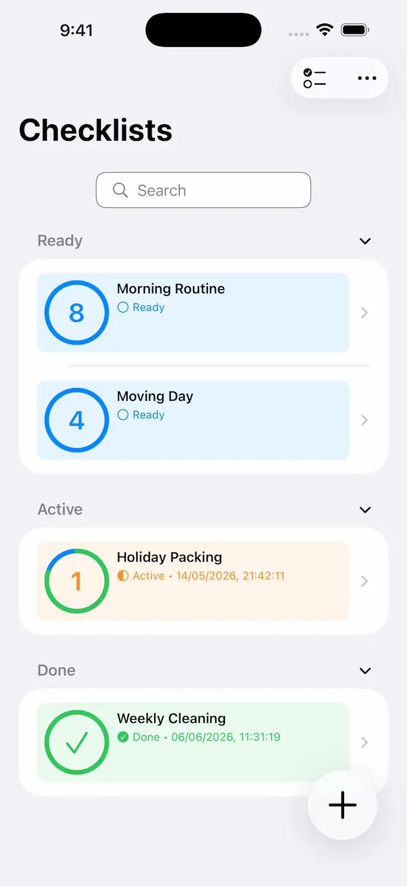
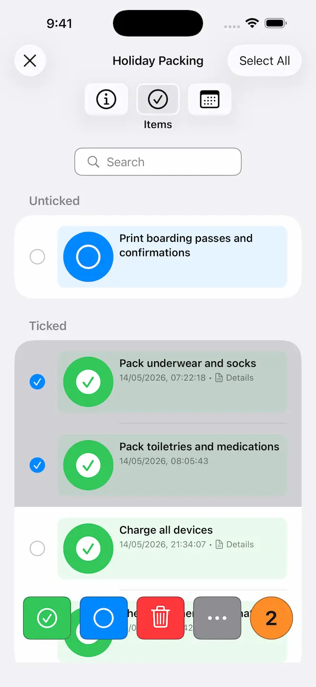
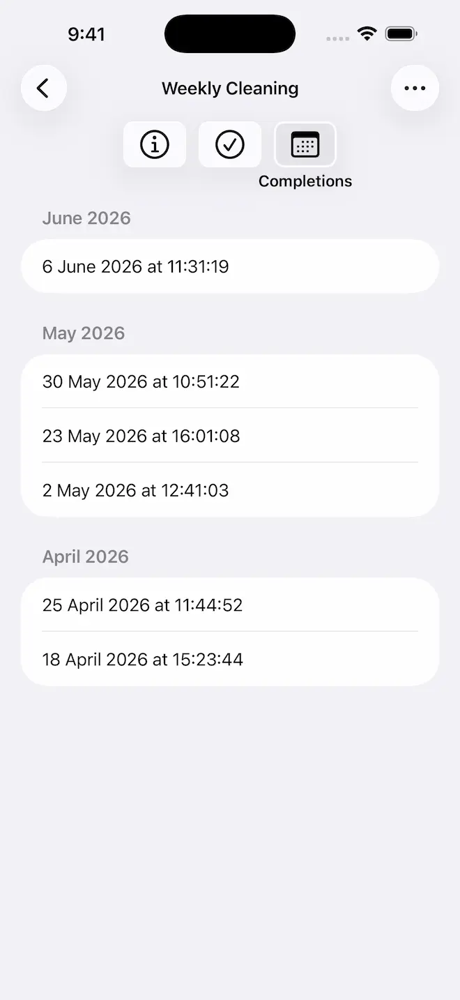
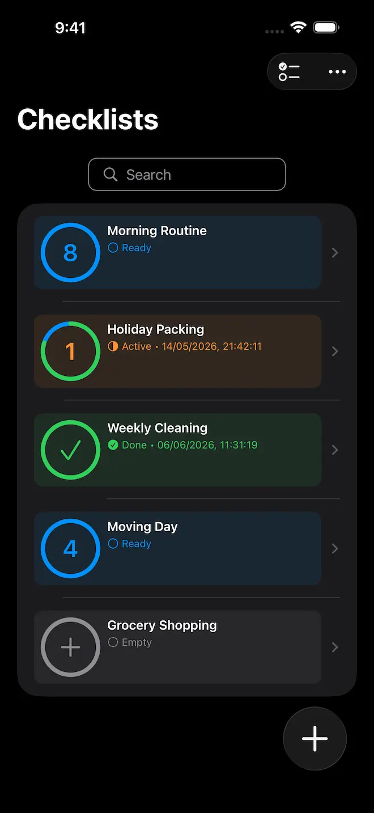

Simple Checklists. Complete Privacy.
Stay organised with Checkomat — the essential, private checklist app for your tasks, grocery shopping, travel, habits, and inspections.


Stop juggling messy notes and scattered lists. Checkomat is a simple and convenient checklist app that helps you organise everything from daily to-dos to holiday packing. Create unlimited lists for tasks, shopping, events, moving, and routines in one clean, distraction-free interface that respects your privacy.
Ready to get organised? Download Checkomat today.
Why Choose Checkomat
- 100% Private & Your Control — Your data stays on your device by default. Optional iCloud sync keeps everything in sync across your Apple devices — fully opt-in, using only your personal iCloud container.
- Minimalist & Simple — Fast, easy-to-use interface focused on getting things done. No clutter, no complexity.
- ADHD-Friendly — Clear structure and distraction-free design help you stay focused and organised.
- Fully Accessible — Comprehensive VoiceOver support ensures inclusive productivity for everyone.
Powerful Features for Everyday Organisation
Everything you need to stay organised, nothing you don't.
Optional iCloud Sync
Enable iCloud sync in Settings and your checklists stay up to date across all your Apple devices automatically. Fully opt-in — if you prefer to stay offline, nothing changes.
Unlimited Checklists
Create as many checklists and items as you need for travel, shopping, events, or home inventory. No limits on checklists or items.
Timestamps & Completion History
Track exactly when checklists and items are completed. Keep a dedicated history for maintenance logs, inspections, and audit trails.
Smart Search & Filters
Find any checklist or item instantly with powerful search and filters. Search by name or title, and filter by status to find exactly what you need.

More Features
- List Management — Add checklists and items in any order, complete with optional details. Move and copy items between checklists with ease.
- Group by Status — View checklists and items grouped by completion status. See at a glance what's done and what still needs attention.
- Flexible Sorting — Sort checklists and items by name, title, or custom order.
- Easy Sharing — Share checklists via Mail, Messages, or AirDrop. Export them for backup or collaboration.
- Smart Import — Import checklists and items from external sources. Preview them before adding.
Use Cases
From quick shopping lists to detailed inspections, Checkomat adapts to your needs.
Grocery Shopping
Create smart shopping lists and track pantry essentials. Organise items by aisle or category so you never forget anything at the shops.
Travel & Packing
Create packing lists for any trip — business travel, beach holidays, or camping adventures. Make sure you have everything you need.
Habits & Routines
Track daily, weekly, or monthly habits. Build lasting routines for fitness, meditation, cleaning, or any goal you're working towards.
Inspections & Maintenance
Professional checklists for efficient inspections, equipment maintenance, and quality control. Timestamps and completion history provide accurate audit trails.
Moving & Relocation
Stay organised during your move with detailed checklists. Track boxes, coordinate utilities, manage address changes, and handle all the details of a big transition.

Private by Design
No subscriptions. No trackers. No custom accounts.
Checkomat works completely offline by default. Your checklists and personal data stay on your iPhone, iPad, or Mac — only you can access them.
Want your checklists on all your Apple devices? Optional iCloud sync is fully opt-in and uses only your personal, private iCloud container. No tracking, no analytics, no adverts — whether you sync or not.
Simple & Effective
Whether you're managing daily chores, packing for a trip, or tracking long-term goals, Checkomat is your reliable companion. Simple, private, and no subscription required.
The best productivity tools get out of your way and let you focus. That's Checkomat — no unnecessary features, no overwhelming interfaces, just clean checklists that work.